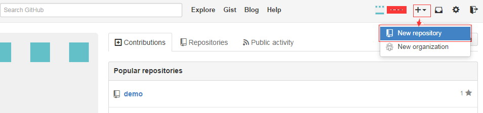
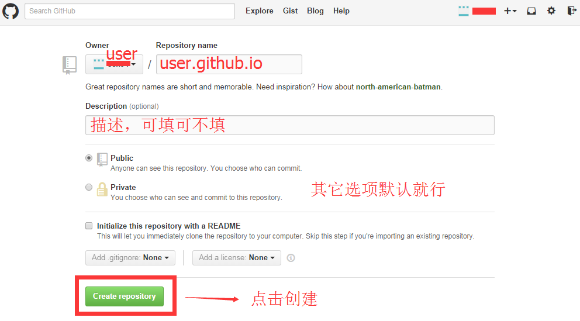
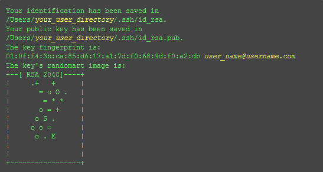
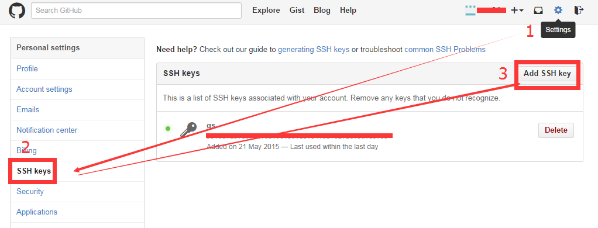
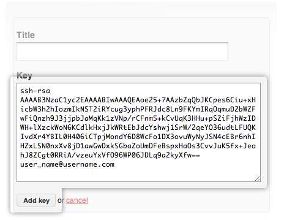
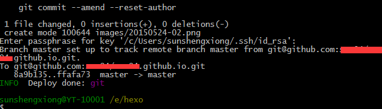
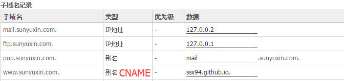

摘要：做为一个菜鸟，突然觉得还没有自己的博客，于是在网上搜了搜，决定用Github Pages与Hexo建立一个自己博客。在网上看教程，折腾了一天终于把自己的博客上线了，这期间遇到了很多问题，所以第一时间就想把自己搭建博客的过程全记录下来，以便以后自己查看或者帮助一些跟我一样经历的人。
##搭建过程如下
##注册github
在github官网注册账号，一定要通过邮箱认证。
##创建repository
1、登录上去之后，点击右上角的+号，选择第一项“ New repository”，如下图：

2、如果你想要你的blog是二级域名的形式打开的话（你的用户名.github.io），那“Repository name”里就输入”你的用户名.github.io”,这个地方一定要注意，你的用户名是注册的时候的用户名，而且必须完整输入(比如，我注册的用户名是“user”,那么里面输入“user.github.io”)

##安装Node.js
到官网下载安装 Node.js
下载下来了直接点安装即可，npm最新版的安装包里自带了的，其它插件都不用安装。
##安装Git
到官网下载安装 Git
下载下来直接点安装即可。
##如何启动Git
1、开始菜单里Git Bash
2、在桌面或我的电脑任意处点击右键即可看到Git Bash
##配置和使用Github
我们如何让本地git项目与远程的github建立联系呢？用SSH keys。
###配置SSH keys
首先启动Git Bash，我们需要检查你电脑上现有的ssh key：
$ cd ~/.ssh 检查本机的ssh密钥
如果提示：No such file or directory 说明你是第一次使用git。
###生成新的SSH Key：
$ ssh-keygen -t rsa -C "邮件地址@youremail.com"
Generating public/private rsa key pair.
Enter file in which to save the key (/Users/your_user_directory/.ssh/id_rsa):<回车就好>
注意1: 此处的邮箱地址，你可以输入自己的邮箱地址;
注意2: 此处的「-C」的是大写的「C」
然后系统会要你输入密码,输入密码的时候没有*字样的，你直接输入就可以了：
Enter passphrase (empty for no passphrase):<输入加密串>
Enter same passphrase again:<再次输入加密串>
这个密码会在你提交项目时使用，如果为空的话提交项目时则不用输入。这个设置是防止别人往你的项目里提交内容。
最后看到这样的界面，就成功设置ssh key了：

###添加SSH Key到GitHub
在本机设置SSH Key之后，需要添加到GitHub上，以完成SSH链接的设置。
1、打开本地C:\Documents and Settings\Administrator.ssh\id_rsa.pub文件。此文件里面内容为刚才生成人密钥。如果看不到这个文件，你需要设置显示隐藏文件。准确的复制这个文件的内容，才能保证设置的成功。
2、登陆github系统。点击右上角的 Settings—->SSH keys —-> add another public keys
3、把你本地生成的密钥复制到里面（key文本框中）， 点击 add key 就ok了
如下图：


###测试
可以输入下面的命令，看看设置是否成功，git@github.com的部分不要修改：
$ ssh -T git@github.com
如果是下面的反馈：
The authenticity of host 'github.com (207.97.227.239)' can't be established.
RSA key fingerprint is 16:27:ac:a5:76:28:2d:36:63:1b:56:4d:eb:df:a6:48.
Are you sure you want to continue connecting (yes/no)?
不要紧张，输入yes就好，然后会看到：
Hi cnfeat! You’ve successfully authenticated, but GitHub does not provide shell access.
###设置用户信息
现在你已经可以通过SSH链接到GitHub了，还有一些个人信息需要完善的。
Git会根据用户的名字和邮箱来记录提交。GitHub也是用这些信息来做权限的处理，输入下面的代码进行个人信息的设置，把名称和邮箱替换成你自己的，名字必须是你的真名，而不是GitHub的昵称。
$ git config --global user.name "cnfeat"//用户名
$ git config --global user.email "cnfeat@gmail.com"//填写自己的邮箱
###SSH Key配置成功
本机已成功连接到github。
##安装hexo
可前往hexo官网查看安装步骤。
所有必备的应用程序安装完成后，即可使用 npm 安装 Hexo。
$ npm install -g hexo-cli
安装 Hexo 完成后，在我的电脑中建立一个名字叫「Hexo」的文件夹，然后在此文件夹中右键打开Git Bash
$ hexo init 在目标文件夹(Hexo)建立网站所需要的所有文件
$ npm install 安装nodejs的依赖包
现在我们已经搭建起本地的Hexo博客了，执行以下命令(在新建的hexo目录下打开Git Bash)
$ hexo generate 生成静态文件
$ hexo server 启动服务器
然后到浏览器输入localhost:4000看看,本地文件就算完成了
##部署到Github
部署到Github前需要配置_config.yml文件。
deploy:
type: git
repo: git@github.com:user/user.github.io.git
配置完了_config.yml文件之后执行以下命令
$ hexo generate 每次部署网站前，需要预先生成静态文件
$ hexo deploy 部署网站,就是上传到Github
或者直接作用组合命令
$ hexo d -g
回车之后会提示你输入密码（如果之前设置了的话），最后如下图如示，那恭喜你已经成功了。

##绑定域名(自己的独立域名与GitHub的空间绑定)
GitHub Pages上设置CNAME
在GitHub网站的根目录下面，新建一个名为CNAME（注意，这个没有扩展名，文件名直接就是CNAME）的文本文件，里面写入你要绑定的域名，比如www.sunyuxin.com即可。
域名设置
登录空间商的域名管理中心，做如下设置。

至此，整个搭建完成，成功拥有自己的博客~